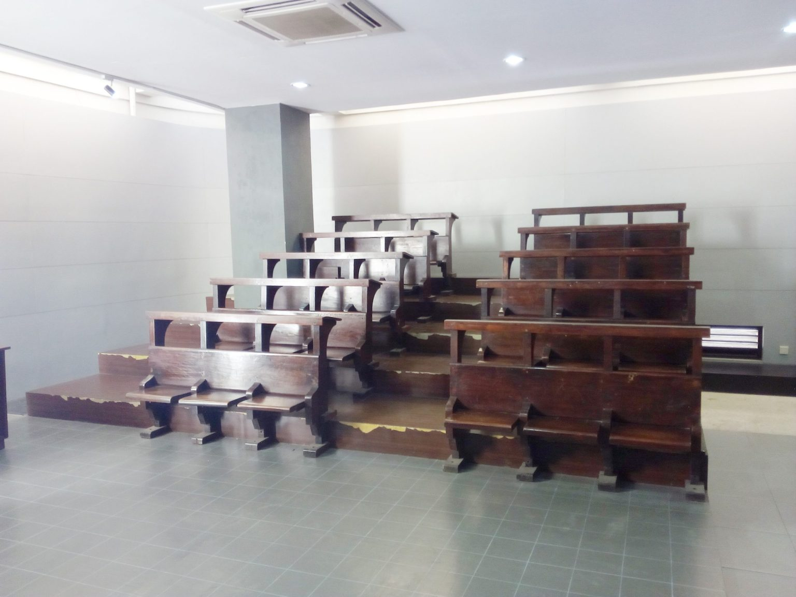
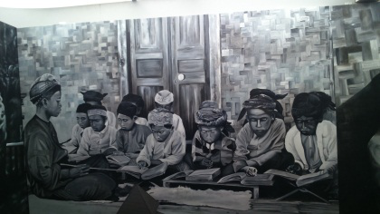
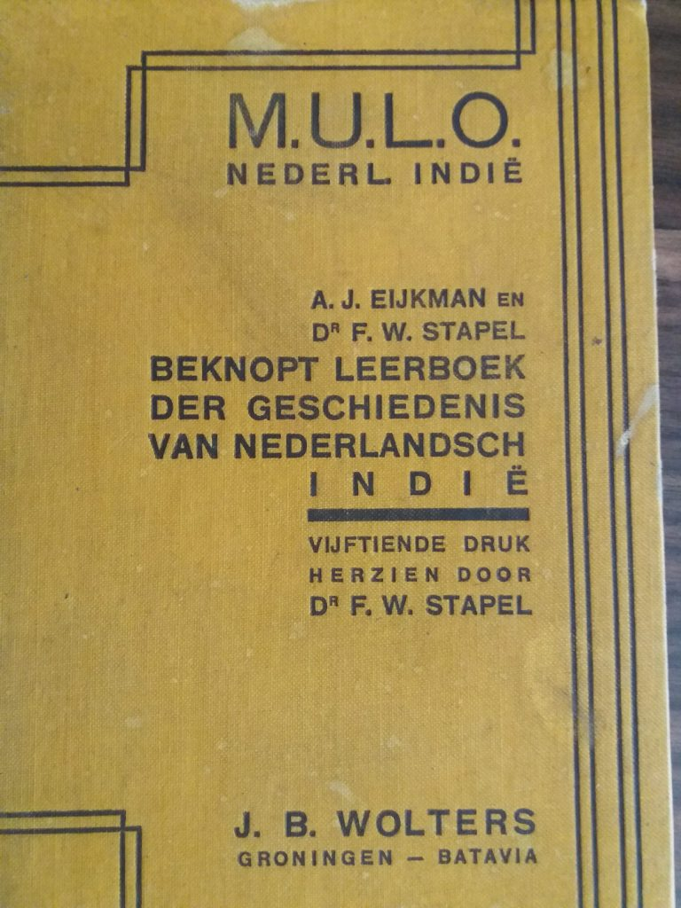

Koleksi Artefak
Benda-benda asli bersejarah yang menjadi saksi perkembangan pendidikan di Indonesia sejak masa pra-aksara hingga era modern.

Koleksi Lukisan
Karya seni rupa yang menggambarkan tokoh pendidikan, suasana pembelajaran, dan peristiwa penting dalam sejarah pendidikan.

Koleksi Buku
Ratusan literatur pendidikan, buku pelajaran klasik, naskah langka, dan dokumen penting sejarah pendidikan.

Koleksi Prestasi Mahasiswa
Penghargaan, trofi, sertifikat, dan karya unggulan mahasiswa UPI di tingkat nasional maupun internasional.